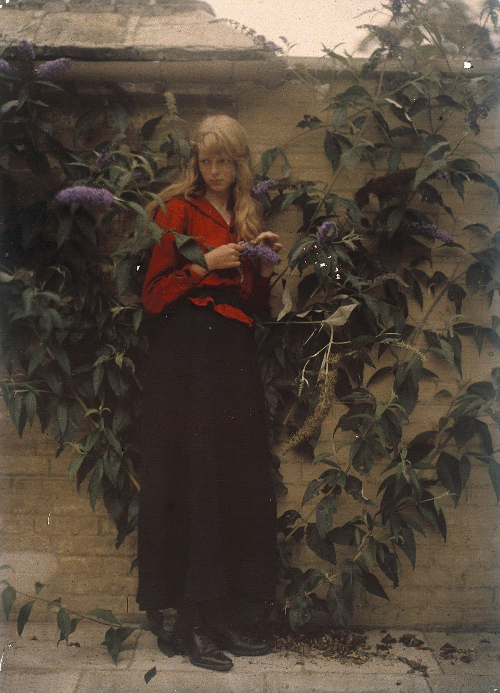
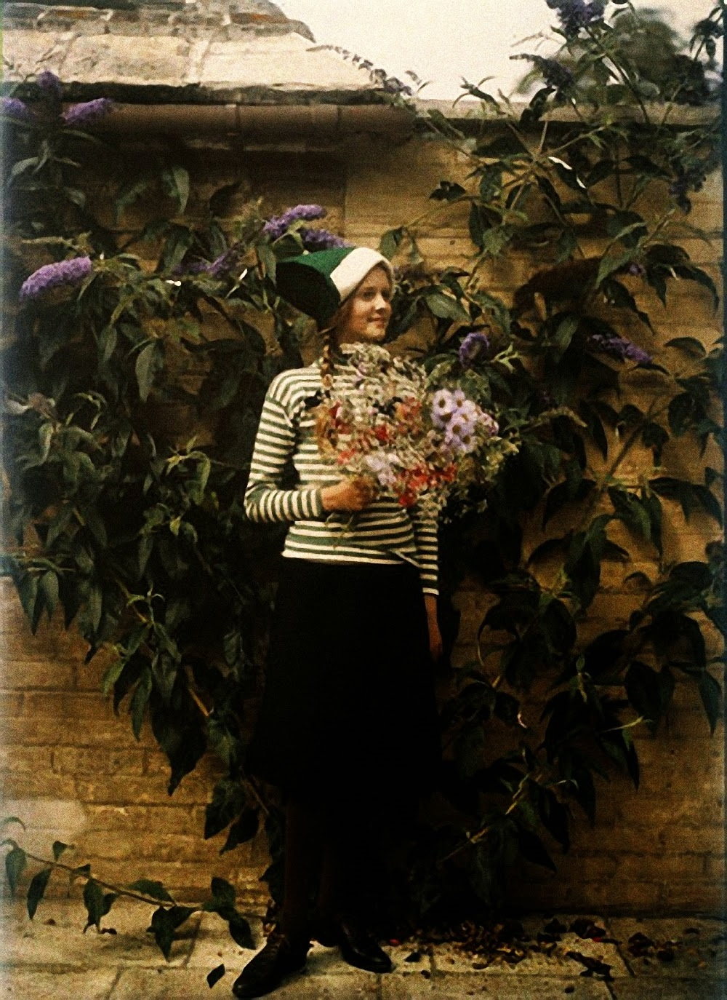
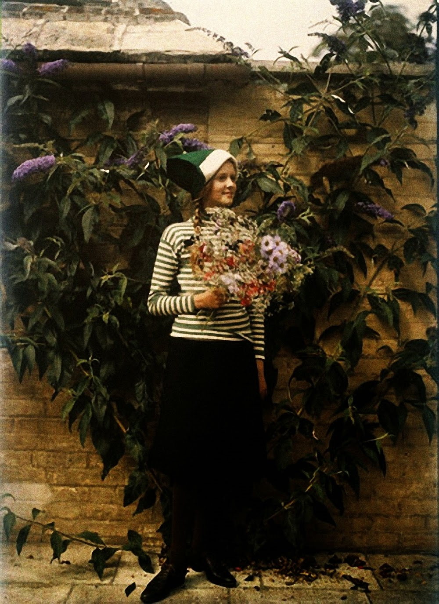

Christina
Written by Cass Python, 2017-09-17Beautiful photos taken in 1913 by Mervyn O'Gorman (1871-1958),  the main subject of the photos is a blond girl who was only known as "Christina" for a long time and was presumed to be the daughter of O'Gorman, an engineer and photographer, who was 43 when he shot the dreamlike photos - but the girl was in fact called Christina Elizabeth Frances Bevan, who was the daughter of Mr O'Gorman's family friend.
Christina Bevanhey was 16 years old when the photos were taken, meaning she was born on the 8th of March 1897 and died in Aylesbury in 1981 at the age of 84. She was never married and had no children. She was the daughter of Edwyn and Mary Bevan. Her father, Edwyn Robert Bevan, was born in 1870 and died in 1943, he was a prominent philosopher, writer on comparative religions and lecturer in Hellenistic Studies at King's College, London.
Her mother, formally the Hon. Mary Waldegrave, was born in 1870, married Edwyn on the 25th of April 1896 and thus became Mary Bevan. She was known by family and friends as "Daisy" and it is not known when she died.
Christina's sister, Anne, died about two years after her in 1983.
It is worth noting that the photos have not been recoloured, in fact colour has been added by a process called "autochrome." These photos are from the original plates.
 

References
I. The Photos are from here
https://archive.org/embed/christina_1913
https://owlman.neocities.org/library/img/christina/
II. A girl's color photos from 104 years ago.
https://imgur.com/gallery/mcQG2 [Internet Archive, archive.is]
III. The mystery of the 'lady in red' is solved! [Note from Ed: That's a very long URL, isn't it?]
http://www.dailymail.co.uk/femail/article-3119976/The-mystery-lady-red-solved-Philosopher-s-daughter-died-without-marrying-34-years-ago-named-blonde-teen-ethereal-1913-colour-photos.html [archive.is]